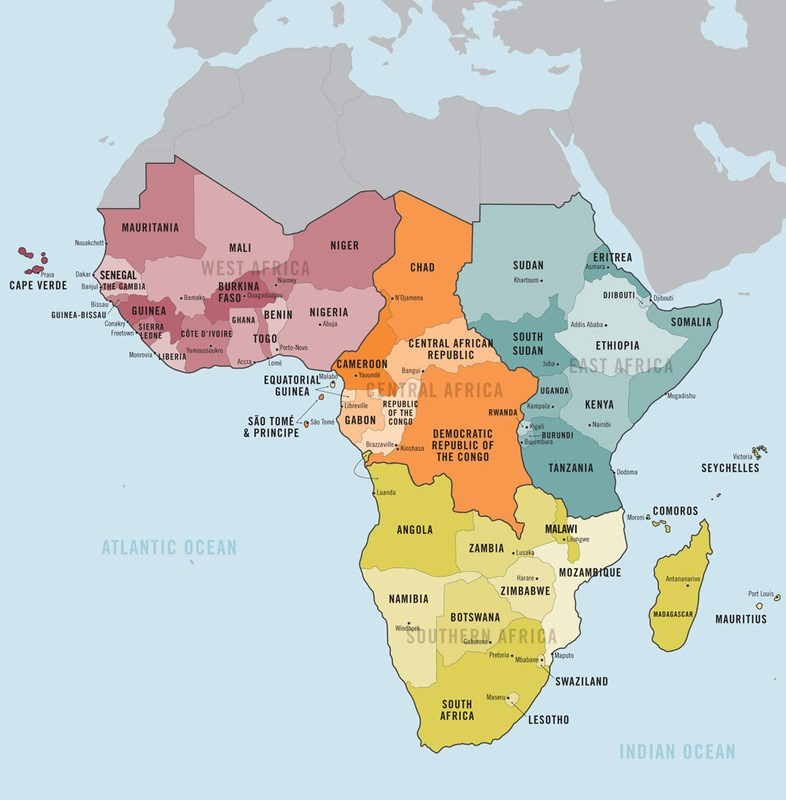
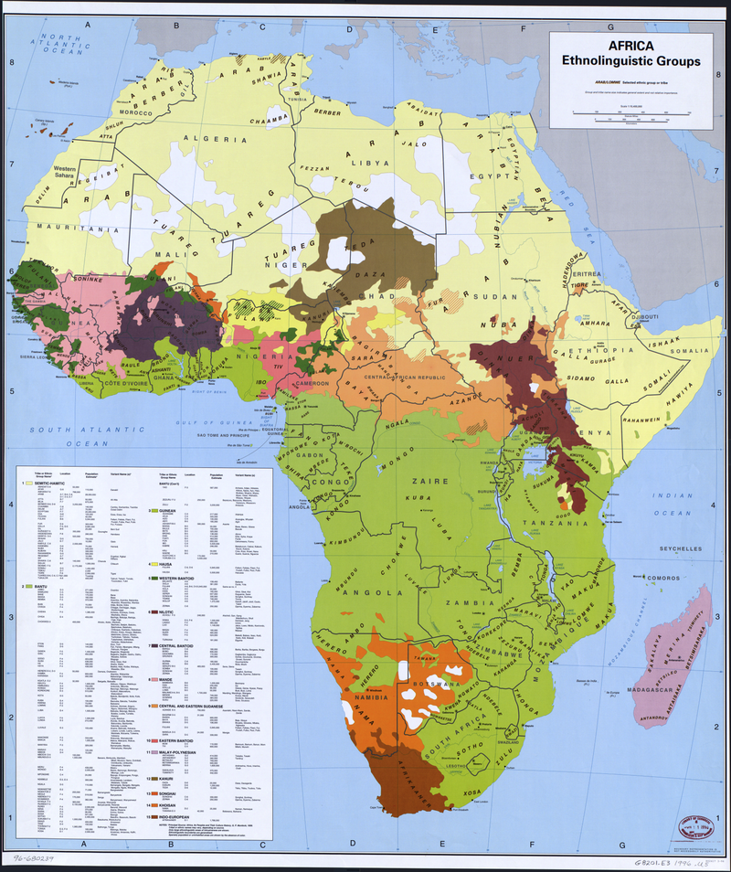
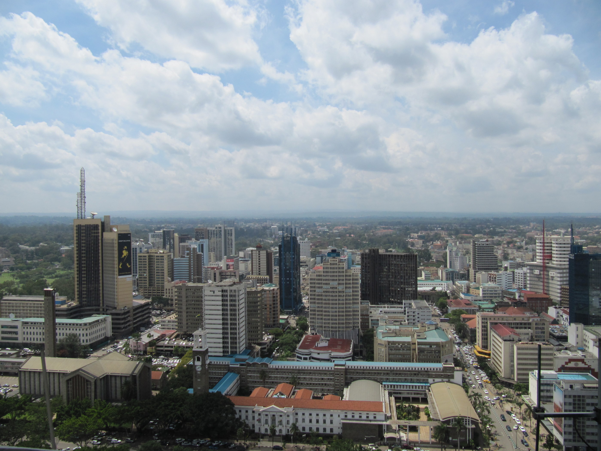
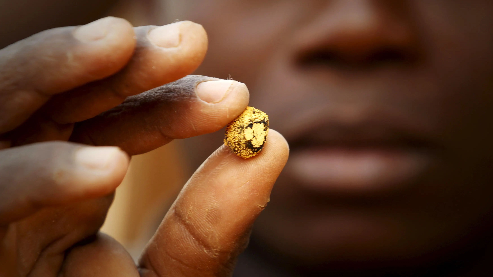

Sub-Saharan Africa
Area, Population and Economy.
Sub-Saharan Africa is the area of the continent of Africa that lies south of the Sahara. According to the United Nations, it consists of all African countries and territories that are fully or partially south of the Sahara. In this explainer blog, We'll look at the main characteristics of this diverse region.
Wher is it? And How big is it?
Sub-Saharan Africa is, geographically, the area of the continent of Africa that lies south of the Sahara. According to the United Nations, it consists of all African countries and territories that are fully or partially south of the Sahara. The sub-Saharan mainland consists of four vast and distinct regions: Central Africa, East Africa, West Africa, and Southern Africa. Together, they constitute an area of 9.4 million square miles (24 million square km).
How many people call it home? How young And how diverse are they?
According to the 2019 revision of the World Population Prospects, the population of
Sub-Saharan Africa was 1.1 billion in 2019. The current growth rate is 2.3%. More than 40% of the population in Sub-Saharan countries is younger than 15 years old. The ethnic groups of Africa number in the thousands, with each population generally having its own language (or dialect of a language) and culture. The ethnolinguistic groups include:
- Afroasiatic
- Khoisan
- Niger-Congo
- Nilo-Saharan
check out the Demographics of Africa page on Wikipedia for more information on this topic.
Economy, Wealth and Unlimited Resource
As of 2011, Africa is one of the fastest developing regions in the world. Six of the world's ten fastest-growing economies over the previous decade were situated below the Sahara. GDP is also an important indicator of a region's economic power. The statistic shows that the aggregated gross domestic product (GDP) in Sub-Saharan Africa In 2020, amounted to around 1.6 trillion U.S. dollar.The region produces 49% of the world's diamonds and up to 30% of world's gold. It also has 30% of the remaining mineral resources in the world. Click Here to blow your mind on this tobicc. The region is also a major exporter to the world of:



